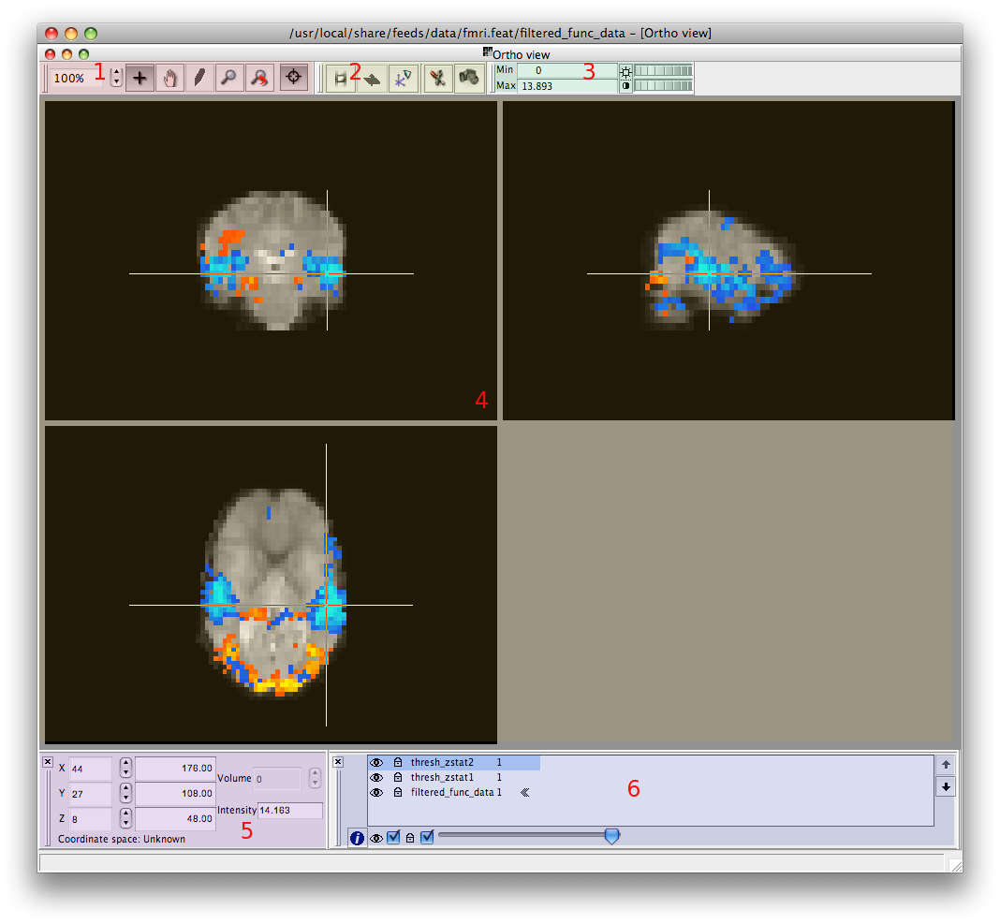

Images can be displayed using several kinds of 2 & 3-D views, selectable via the Tools menu:
Here we can see a typical view, "Ortho view", with the default set of toolbars enabled:
|
 |
You can open as many views as you like (although the viewer might get a little slow if you open too many). This includes opening more than one instance of any given type - for example, you might want to start with the Ortho view, then open another Ortho view, in which you have different images from the Layer List turned on, so that you can move the cursor around in the volume and compare different images (see example). If you close down all views then all loaded images will be discarded and you will have to re-open a file to start viewing again.
If you end up with too many open sub-windows to keep track of, Window -> Tile will auto-arrange them so that they are all visible simultaneously, and Window -> Cascade will place all sub-windows in a diagonal overlapping line, for you to select and adjust those of interest.
Moving the mouse over a slice while holding down the left mouse button will cause the cursor to move around the image. The cursor position and value can be viewed on the Cursor Toolbar. It is also possible to move the cursor to any position by altering the values in the Cursor Toolbar. FSLView has "linked cursor" behaviour: as the cursor is moved around in one view it also moves in all other views. Visit the "View Options" dialog to turn on/off the linked cursor as needed.
{kind=link}